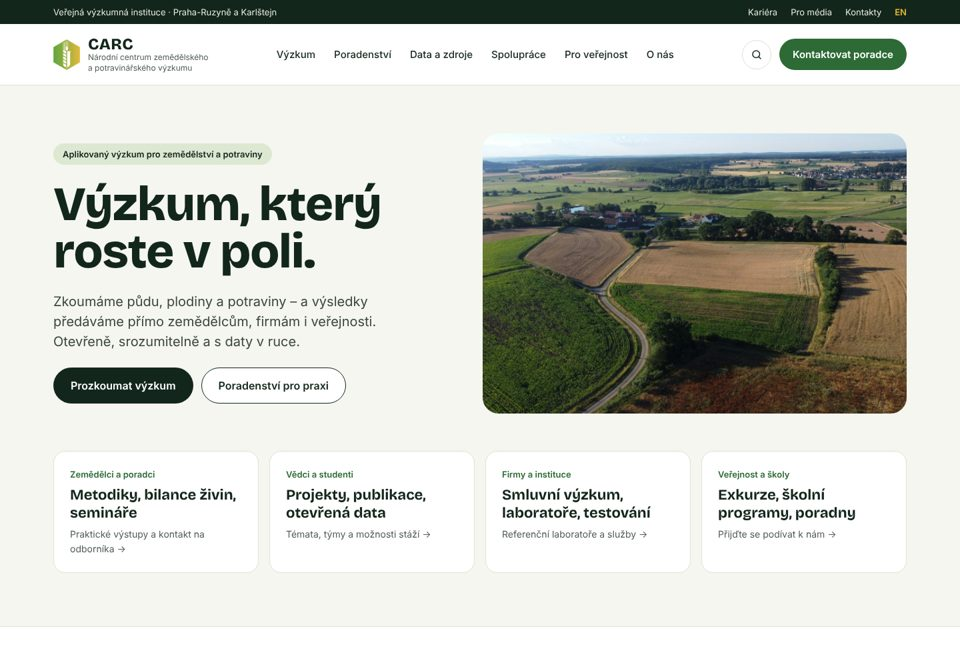
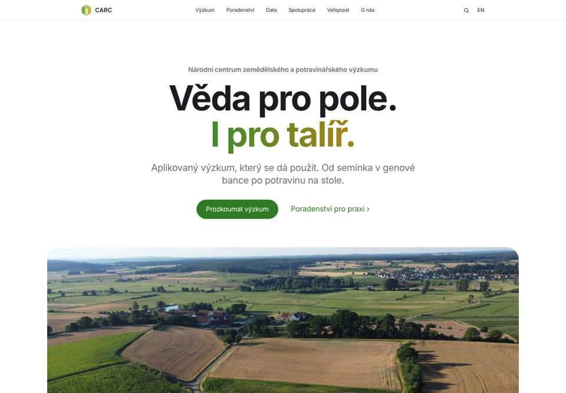
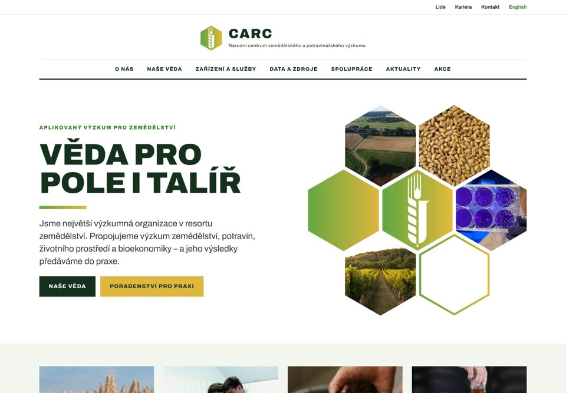
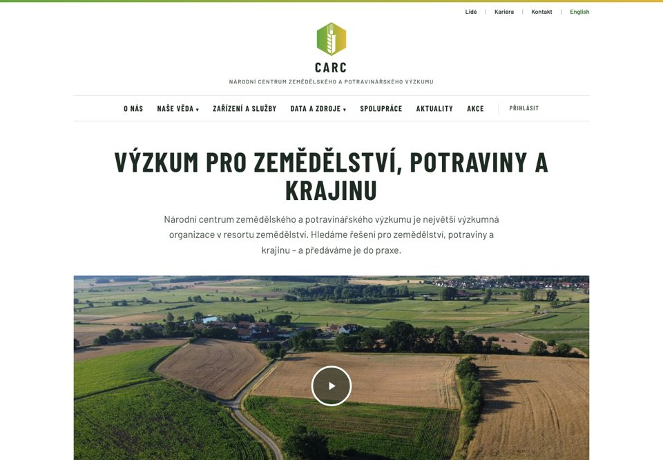
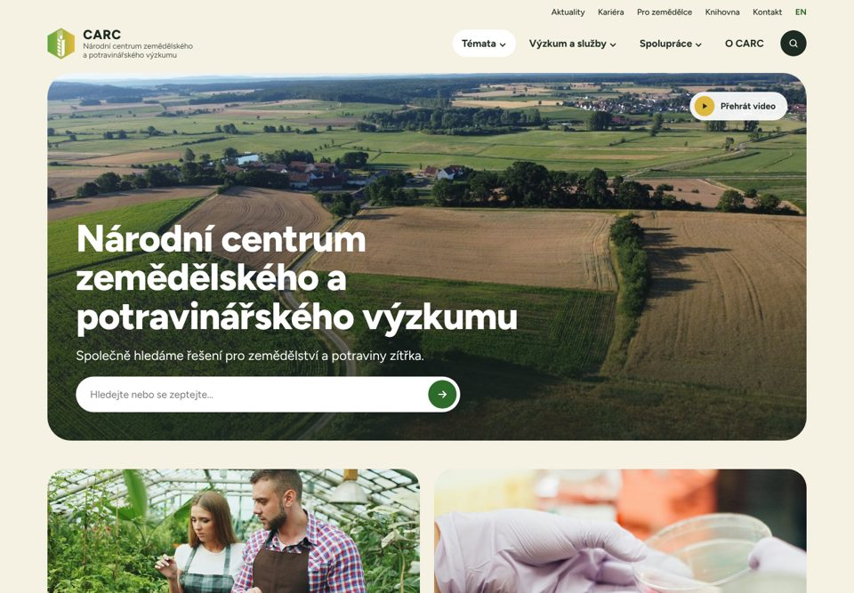
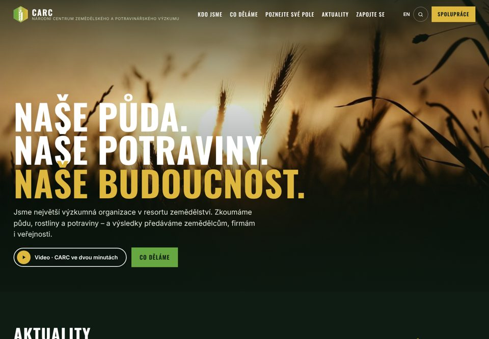

Nový web CARC: šest návrhů designu
Prohlédněte si šest variant nového webu. Hlasovat můžete ve formuláři – odkaz najdete níže.
Klepnutím na kartu otevřete úvodní stránku varianty.Hlasovat ve formuláři

Varianta A
Terénní
- Zemité barvy, motiv pokusných parcel
- Výrazné nadpisy, přátelský tón
- Rozcestník pro zemědělce, vědce, firmy i veřejnost

Varianta B
Čistý minimalismus
- Styl Apple: hodně prostoru, velké fotky
- Barvy loga jen jako akcent
- Velká typografie, krátké věty

Varianta C
Institucionální, plástev z loga
- Volná inspirace webem Rothamsted Research
- Šestiúhelník z loga jako grafický motiv
- Nadpisy velkými písmeny, výrazná struktura

Varianta D
Klasická vědecká instituce
- Věrně podle Rothamsted Research
- Logo uprostřed, menu velkými písmeny
- Pás karet s obsahem, klidné čtení v jednom sloupci

Varianta E
Vlídná a otevřená
- Inspirace webem Wageningen University & Research
- Video v úvodu, pole Hledejte nebo se zeptejte
- Zaoblené karty, témata a rozcestníky

Varianta F
Imerzivní příroda
- Inspirace whoi.edu: tmavý web, fotky přes celou šířku
- Velké verzálkové titulky „Naše půda. Naše potraviny. Naše budoucnost.“
- Aktuality jako příspěvky, velké dlaždice projektů a témat